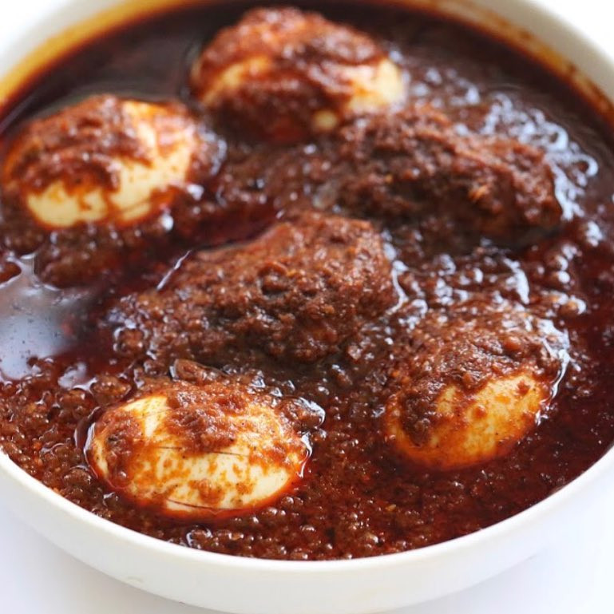

Dorowot

Doro Wat is one of the most famous of all African dishes. You will find it in every Ethiopian
restaurant and virtually anyone who is familiar with African cuisine will have heard of it.
Ingredients You Need To Prepare Dorowot
- Berbere
- Fiery
- Bright Red
- Injera
Instructions
- Place the chicken pieces in a bowl and pour lemon juice over. Let sit at room temperature for at least 30 minutes.
- Heat the niter kibbeh or butter along with the olive oil in a Dutch oven. Add the onions and saute, covered, over low heat for 45 minutes, stirring occasionally.
- Add the garlic, ginger, and 1 tablespoon butter and continue to saute, covered, for another 20 minutes, stirring occasionally.
- Add the berbere and the 2 remaining tablespoons of butter and saute, covered, over low heat for another 30 minutes, stirring occasionally.
- Add the chicken, broth, salt and wine and bring to a boil. Reduce the heat to low, cover, and simmer for 45 minutes, stirring occasionally.
- Adjust the seasonings, adding more berbere according to heat preference. Add the boiled eggs and simmer on low heat, covered, for another 15 minutes.\
- Half or quarter the eggs and arrange on the plates with the stew. Serve hot with injera, bread or rice.